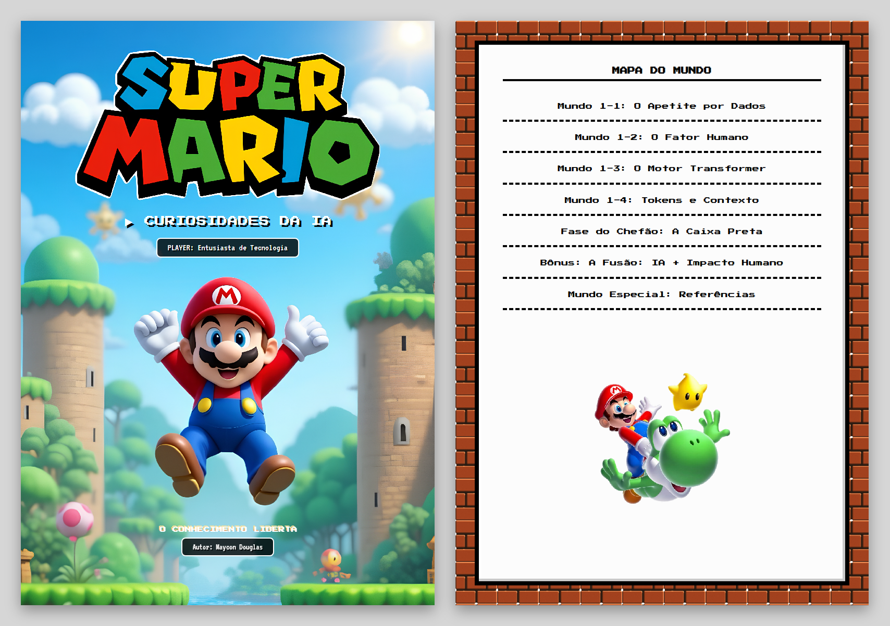
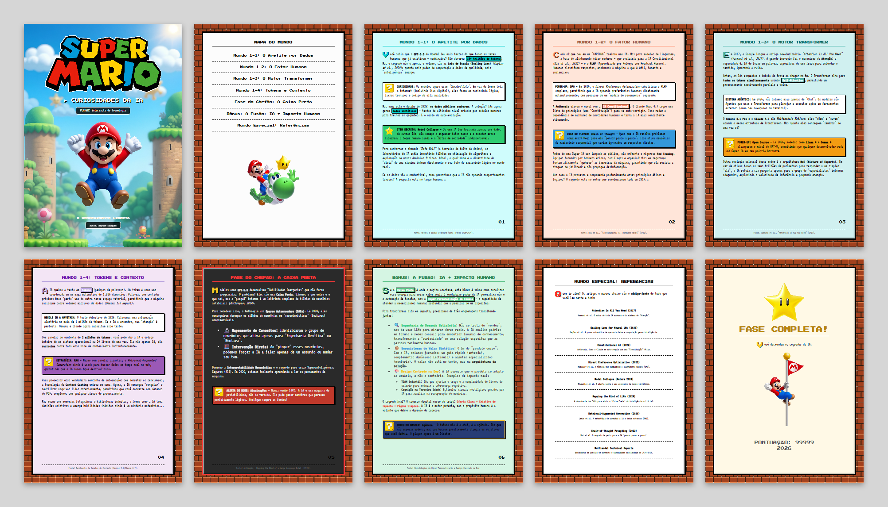

Super IA World - Curiosidades da IA
► CURIOSIDADES DA IA

| Nome | R.A |
|---|---|
| Maycon Douglas Inácio Silva | H719CD3 |
Campus SJC Dutra - São José dos Campos (SP)
| Número | R.A. | Nome | Curso |
|---|---|---|---|
| 1 | H719CD3 | Maycon Douglas Inácio Silva | Análise e Desenvolvimento de Sistemas |
Turma: DS3A48
Atividade realizada individualmente, abrangendo pesquisa, redação, design e desenvolvimento da obra.
Ano: 2026 | Semestre: 3º
TRABALHO, ECONOMIA E ADMINISTRAÇÃO · Programas e projetos desenvolvidos para a comunidade.
Ebook (50 horas)
| Organização Parceira | informar a escola, biblioteca, curso técnico ou coletivo atendido |
| Público Beneficiário | Estudantes e comunidade externa interessados em Inteligência Artificial |
A presente atividade de extensão universitária consistiu na pesquisa, redação, design e desenvolvimento do e-book "Super IA World: Curiosidades da IA", obra digital gratuita de 10 folhas em formato A4, com cerca de 1.600 palavras, que apresenta curiosidades sobre Inteligência Artificial usando a estética retrô de 16 bits inspirada em Super Mario World.
A obra aproxima o público não especialista de conceitos técnicos da área — dados de treinamento, alinhamento de modelos, arquitetura Transformer, tokens, janelas de contexto e interpretabilidade — usando a linguagem visual de um jogo clássico como ponto de entrada. Cada capítulo é apresentado como uma fase, com blocos de destaque em forma de curiosidade, dica e power-up, e encerra com a fonte utilizada. O conteúdo foi atualizado para maio de 2026.
A obra é organizada em capítulos temáticos, antecedidos por capa e índice e seguidos de uma folha final, conforme apresentado no Quadro 1.
Quadro 1 – Capítulos do e-book e conceitos de Inteligência Artificial tratados
| Capítulo | Conceitos tratados |
|---|---|
| Mundo 1-1 — O Apetite por Dados | Volume de dados de treinamento, leis de escala, dados curados, dados sintéticos e colapso de modelo |
| Mundo 1-2 — O Fator Humano | RLHF, IA Constitucional, DPO, cadeia de raciocínio (Chain of Thought) e Red Teaming |
| Mundo 1-3 — O Motor Transformer | Mecanismo de atenção, self-attention, sistemas agênticos, modelos abertos e Mixture of Experts |
| Mundo 1-4 — Tokens e Contexto | Tokens e espaço vetorial, teste needle in a haystack, janelas de contexto, RAG e context caching |
| Fase do Chefão — A Caixa Preta | Habilidades emergentes, interpretabilidade mecanística, Sparse Autoencoders e alucinações |
| Bônus — A Fusão: IA + Impacto Humano | Hiper-personalização, design centrado na dor e agência |
| Mundo Especial — Referências | Nove artigos e marcos da área, com link |
Fonte: Elaborado pelo autor (2026).
A peça foi construída como aplicação web estática, sem framework e sem bibliotecas de terceiros.
main, article, nav, aside e
footer, com rótulos de acessibilidade nas folhas e título da capa
acessível a leitores de tela.A obra reproduz o formato A4 exato por meio de regras de impressão
(@media print), preservando as imagens e as cores de fundo na
exportação para PDF, o que permite distribuir a versão impressa com a mesma
diagramação da digital.
Atuou em todas as etapas da obra: pesquisa, redação, design e desenvolvimento, aplicando conhecimentos das disciplinas de Programação Web, Engenharia de Software e Interface Homem-Computador. Foi responsável por pesquisar e selecionar os conteúdos e as nove referências sobre Inteligência Artificial, redigir os capítulos em linguagem acessível, compor a identidade visual de 16 bits com tratamento das imagens no Canva, estruturar o CSS em arquitetura modular e codificar o suporte a impressão em A4 — reproduzido na íntegra no Anexo A deste relatório.
A atividade entregou à comunidade uma obra introdutória e gratuita sobre Inteligência Artificial, que usa a linguagem visual de um jogo clássico para tornar acessíveis conceitos técnicos da área, disponível em formato digital e em versão para impressão em A4.
A atividade atendeu diretamente informar o número de pessoas atendidas presencialmente e onde.
Resultados objetivos e verificáveis:
A atividade está alinhada aos seguintes Objetivos de Desenvolvimento Sustentável (ODS) da ONU:
A obra foi desenvolvida pelo aluno e disponibilizada em repositório público. Informar o local e a data da apresentação ou distribuição presencial — as Orientações da UNIP (p. 6) exigem que a atividade seja realizada presencialmente.
A comprovação da atividade fundamenta-se na própria peça produzida, reproduzida na íntegra no Anexo A a partir da folha 12, no repositório público da obra e nas capturas apresentadas a seguir.
O anexo reproduz a peça como ela é distribuída — mesma diagramação, mesmo formato de impressão. Por isso as folhas do anexo não recebem o número de página do relatório, que cairia sobre a arte; o sumário anuncia onde o anexo começa. Imprimir apenas o intervalo do anexo devolve a peça pronta para uso.
Figura 1 – Capa e Mapa do Mundo (índice) do e-book "Super IA World"

Fonte: Acervo do autor (2026) — reprodução da peça produzida na atividade.
Figura 2 – As 10 folhas do e-book, cada capítulo com seu tema de cor

Fonte: Acervo do autor (2026) — reprodução da peça produzida na atividade.
► CURIOSIDADES DA IA

Você sabia que o GPT-5.5 da OpenAI leu mais textos do que todos os seres humanos que já existiram — combinados? Ele devorou 15+ trilhões de tokens. Mas o segredo não é apenas o volume, são as Leis de Escala (Scaling Laws) (Kaplan et al., 2020): quanto mais poder de computação e dados de qualidade, mais "inteligência" emerge.
Mas aqui está o desafio de 2026: os dados públicos acabaram. A solução? IAs agora geram dados sintéticos — textos de altíssimo nível criados por modelos menores para treinar os gigantes. É o ciclo da auto-evolução.
Para contornar o chamado "Data Wall" (a barreira da falta de dados), os laboratórios de IA estão investindo bilhões em otimização de algoritmos e exploração de novos domínios físicos. Afinal, a qualidade e a diversidade da "dieta" de uma máquina definem diretamente o seu teto de raciocínio lógico no mundo real.
Se os dados são o combustível, como garantimos que a IA não aprenda comportamentos tóxicos? A resposta está no toque humano...
Cada clique seu em um "CAPTCHA" treinou uma IA. Mas para modelos de linguagem, a base do alinhamento ético moderno — que evoluiria para a IA Constitucional (Bai et al., 2022) — é o RLHF (Aprendizado por Reforço com Feedback Humano). Humanos classificam respostas, ensinando à máquina o que é útil, honesto e inofensivo.
A Anthropic elevou o nível com a IA Constitucional. O Claude Opus 4.7 segue uma lista de princípios (uma "Constituição") para se auto-corrigir. Isso reduz a dependência de milhares de anotadores humanos e torna a IA mais consistente eticamente.
Antes de uma Super IA ser lançada ao público, ela enfrenta o rigoroso Red Teaming. Equipes formadas por hackers éticos, sociólogos e especialistas em segurança tentam ativamente "quebrar" as barreiras da máquina, garantindo que ela resista a ataques de jailbreak e não propague desinformação.
Mas como a IA processa e compreende profundamente esses princípios éticos e lógicos? O segredo está no motor que revolucionou tudo em 2017...
Em 2017, o Google lançou o artigo revolucionário "Attention Is All You Need" (Vaswani et al., 2017). A grande inovação foi o mecanismo de Atenção: a capacidade da IA de focar em palavras específicas de uma frase para entender o sentido, ignorando o ruído.
Antes, as IAs esqueciam o início da frase ao chegar no fim. O Transformer olha para todos os tokens simultaneamente usando Self-Attention, permitindo um processamento massivamente paralelo e veloz.
O Gemini 3.1 Pro e o Claude 4.7 são Multimodais Nativos: eles "vêem" e "ouvem" usando a mesma estrutura de Transformer. Mas quanto eles conseguem "lembrar" de uma vez só?
Outra evolução colossal desse motor é a arquitetura MoE (Mixture of Experts). Em vez de ativar todos os seus trilhões de parâmetros para responder a um simples "olá", a IA roteia a sua pergunta apenas para o grupo de "especialistas" internos adequados, explodindo a velocidade de inferência e poupando energia.
A IA quebra o texto em Tokens (pedaços de palavras). Um token é como uma coordenada em um mapa matemático de 1.536 dimensões. Palavras com sentidos próximos ficam "perto" uma da outra nesse espaço vetorial, permitindo que a máquina raciocine sobre volumes massivos de dados (Gemini 1.5 Report).
Com janelas de contexto de 2 milhões de tokens, você pode dar à IA o código inteiro de um sistema operacional ou 20 livros de uma vez. Ela não apenas lê, ela raciocina sobre toda essa base de conhecimento instantaneamente.
Para processar essa verdadeira montanha de informações sem derreter os servidores, a tecnologia de Context Caching entrou em cena. Agora, a IA consegue "congelar" e reutilizar arquivos lidos anteriormente, permitindo que você converse com dezenas de PDFs complexos sem qualquer atraso de processamento.
Mas mesmo com memórias fotográficas e bibliotecas infinitas, a forma como a IA toma decisões criativas e emerge habilidades inéditas ainda é um mistério matemático...
Modelos como GPT-5.5 desenvolvem "Habilidades Emergentes" que não foram programadas. O problema? Eles são uma Caixa Preta. Sabemos o que entra e o que sai, mas o "porquê" interno é um labirinto complexo de bilhões de neurônios artificiais (Anthropic, 2024).
Para resolver isso, a Anthropic usa Sparse Autoencoders (SAEs). Em 2024, eles conseguiram decompor os milhões de neurônios em "características" (features) compreensíveis.
Dominar a Interpretabilidade Mecanística é o segredo para criar Superinteligências Seguras (ASI). Em 2026, estamos finalmente aprendendo a ler os pensamentos da máquina.
Se a Caixa Preta é onde a mágica acontece, este bônus é sobre como canalizar essa energia para criar valor real. O verdadeiro poder da IA generativa não é a automação de tarefas, mas a Hiper-Personalização em Escala — a capacidade de atender a necessidades humanas profundas com a precisão de um algoritmo.
Para transformar bits em impacto, precisamos de três engrenagens trabalhando juntas:
O segredo final? O sucesso digital nasce do tripé: Oferta Clara + Criativo de Impacto + Página Simples. A IA é o motor potente, mas o propósito humano é o volante que define a direção do sucesso.
Quer ir além? Os artigos e marcos abaixo são o código-fonte de tudo que você leu neste e-book:

Você desvendou os segredos da IA.